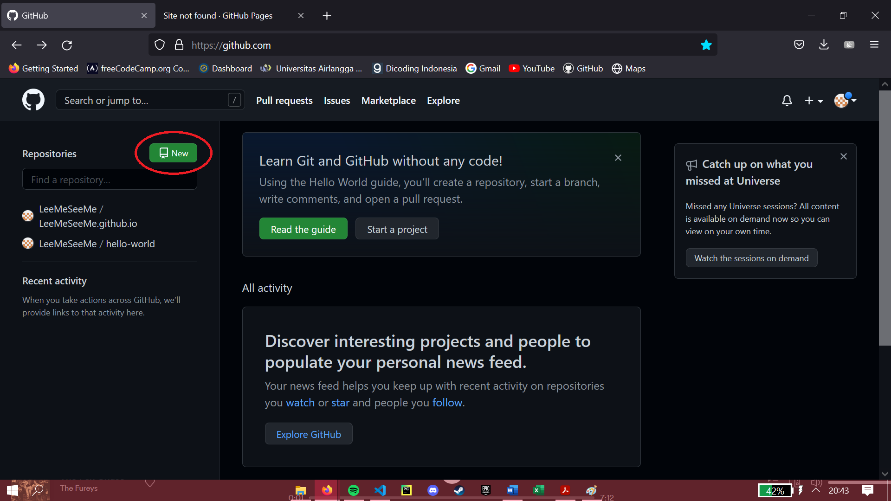
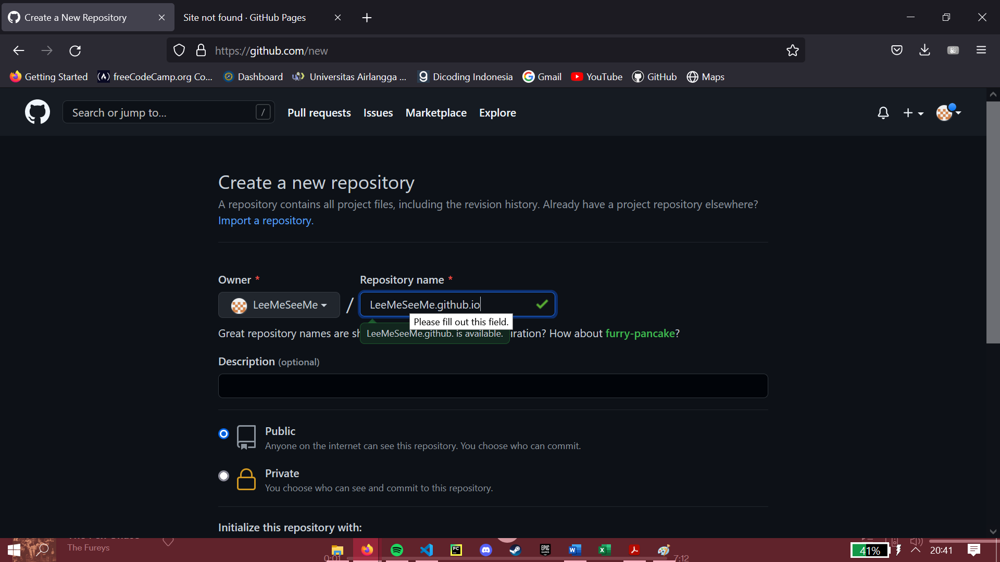
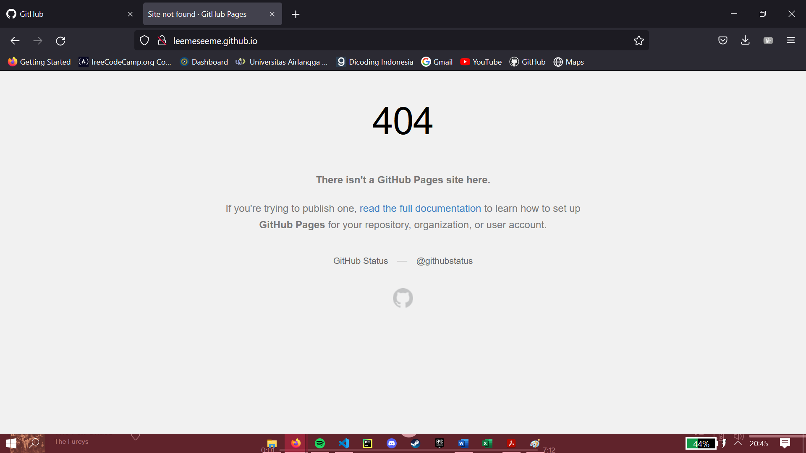
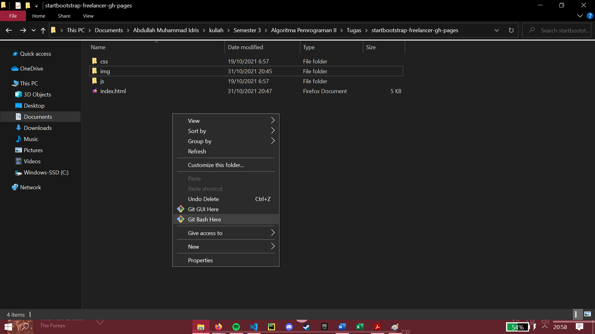
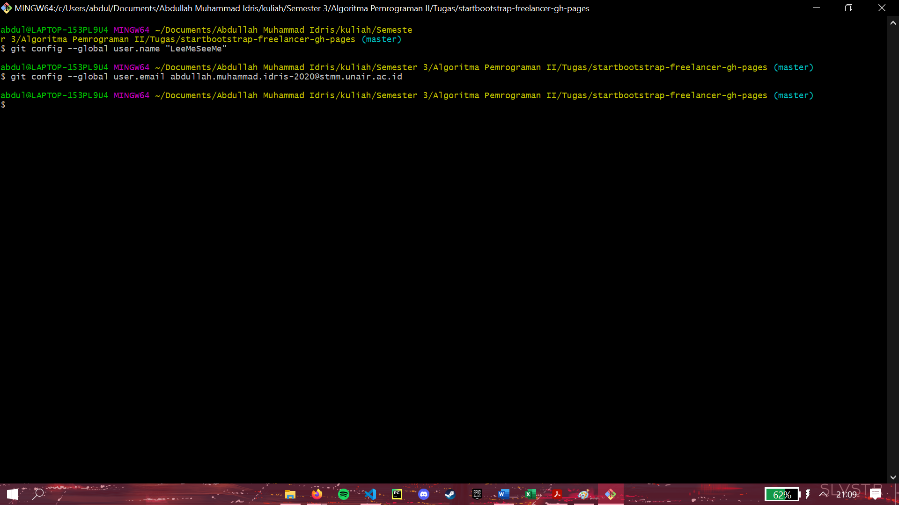
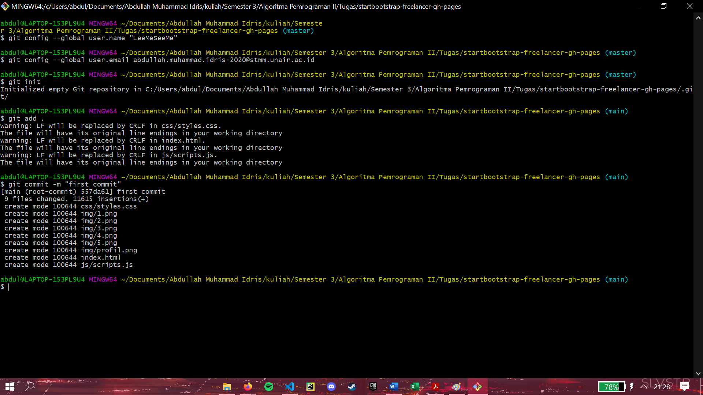
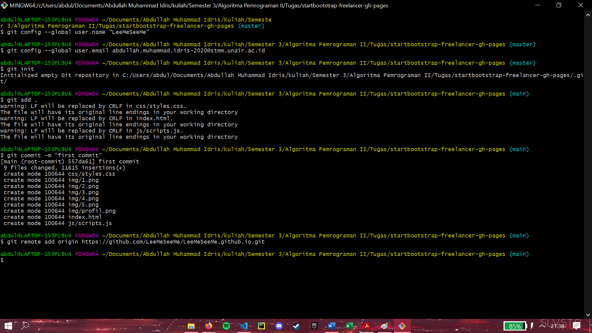
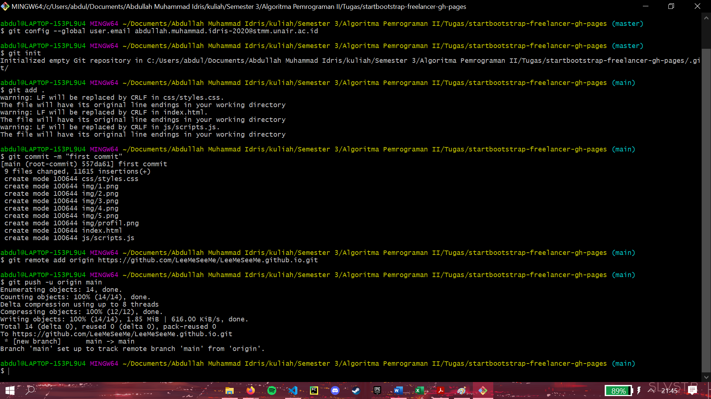
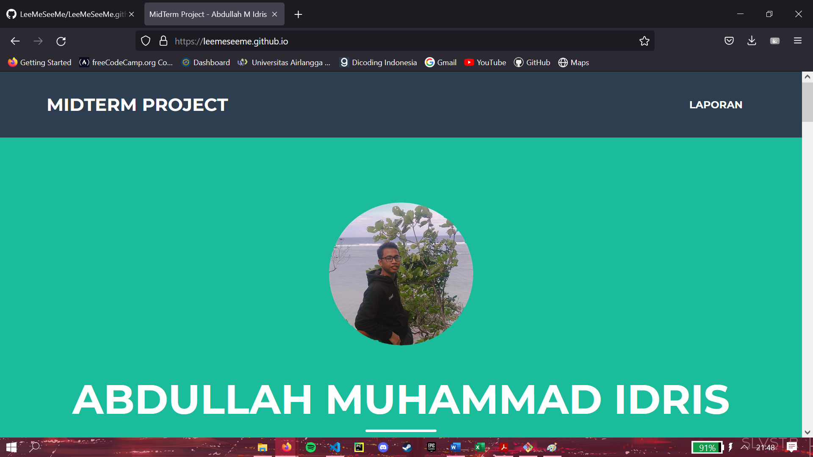

Mahasiswa Universitas Airlangga
Masuklah ke dalam akun github kalian, jika belum memiliki akun github silahkan buat terlebih dahulu. Klik button new untuk membuat repository baru.

Kemudian buatlah repository dengan nama username.github.io. pastikan repository yang anda buat public. Kemudian klik “Create Repository”

Jika kita masukkan username.github.io ke browser, akan muncul webpage sebagai berikut

Semua file yang kita masukkan kedalam repository akan tampil di domain tersebut.
Selanjutnya download dan install git. Setelah proses instalasi selesai, buka folder dari webpage yang ingin ditampilkan di github lalu klik kanan, klik opsi Git Bash Here.

Kemudian jalankan perintah dibawah ini untuk memberitahu git username dan email dari github kita. Gunakan “—global” agar perintah berlaku ke semua file dan folder di pc kita.

Setelah konfigurasi selesai, Jalankan perintah “git init” untuk menginisiasikan foder menjadi repository git. Lalu “git add .” untuk memasukkan semua file yang ada di dalam folder ke repository, kemudian lakukan commit dengan perintah “git commit”.

Hubungkan git dengan github dengan perintah “git remote add origin alamat github”

Setelah terhubung, kita dapat push seluruh file webpage kita ke repository github.


Hai... perkenalkan namaku abdullah muhammad idris, lahir di Palembang, 28 Agustus 2002. Mahasiswa semester 3 jurusan Teknologi Sains Data di Universitas Airlangga. Pernah tinggal di tiga kota berbeda, di palembang sampai jenjang pendidikan SD, Tanjung Pinang sampai tamat SMP, dan terakhir Makasssar sampai sekarang. hobi main game, nonton film, denger audiobook dan musik. pernah menjadi ketua OSIS pada masa smp dan menjadi wakil ketua OSIS di SMA